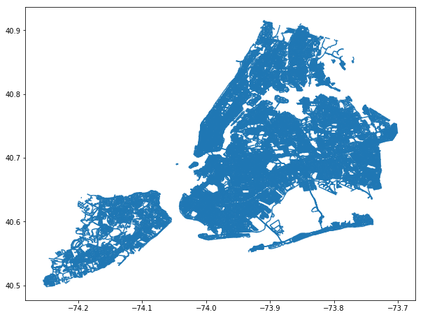

Snapping points to closest¶
As a test, I will use data from Sidewalk Café Licenses and Applications from NYC Open Data portal
https://data.cityofnewyork.us/Business/Sidewalk-Caf-Licenses-and-Applications/qcdj-rwhu
For the line network, I will use NYC’s Lion street data
https://www1.nyc.gov/site/planning/data-maps/open-data/dwn-lion.page
[1]:
import geopandas as gpd
import pandas as pd
import matplotlib.pyplot as plt
import networkx as nx
from shapely.geometry import box, LineString, Point,MultiPoint
import os
import sys
import requests
from zipfile import ZipFile as zzip
import fiona
from scipy.spatial import cKDTree
import numpy as np
sys.path.append(os.path.realpath('..'))
Get the Sidewalk Café Licenses and Applications data!
[9]:
fp = r"https://data.cityofnewyork.us/api/views/qcdj-rwhu/rows.csv?accessType=DOWNLOAD"
sidewalk_df = pd.read_csv(fp)
[12]:
sidewalk_df.columns
[12]:
Index(['LICENSE_NBR', 'LIC_STATUS', 'BUSINESS_NAME', 'BUSINESS_NAME2',
'BUILDING', 'STREET', 'CITY', 'STATE', 'ZIP', 'SWC_TYPE', 'SWC_SQ_FT',
'SWC_TABLES', 'SWC_CHAIRS', 'DOHMH', 'LATITUDE', 'LONGITUDE',
'COMMUNITY_DISTRICT', 'CITY_COUNCIL_DISTRICT', 'CD_URL', 'APP_ID',
'APP_SWC_TYPE', 'APP_SQ_FT', 'APP_TABLES', 'APP_CHAIRS', 'APP_STATUS',
'APP_STATUS_DATE', 'EXPIRATION_DATE', 'APP_TOO_DATE', 'SUBMIT_DATE',
'INTAKE', 'INTAKE_DD', 'DPQA', 'SEND_PACKAGE_DD', 'CP', 'CP_DD', 'CB',
'CB_DD', 'HEARING', 'HEARING_DD', 'HEARING_PUBLIC', 'HEARING_PUBLIC_DD',
'CC', 'CC_DD', 'MOO', 'MOO_DD', 'ISSUANCE', 'ISSUANCE_DD'],
dtype='object')
[15]:
sidewalk_df['geometry'] = list(zip(sidewalk_df['LONGITUDE'], sidewalk_df['LATITUDE']))
[16]:
sidewalk_df['geometry'] = sidewalk_df['geometry'].apply(Point)
[17]:
sidewalk_gdf = gpd.GeoDataFrame(sidewalk_df, geometry='geometry')
[18]:
sidewalk_gdf.crs = {'init': 'epsg:4326'}
[19]:
sidewalk_gdf.plot(figsize = (10,10), markersize = 1)
[19]:
<matplotlib.axes._subplots.AxesSubplot at 0x1964c947f28>
[23]:
sidewalk_gdf['LICENSE_NBR'].count()
[23]:
1421
[24]:
sidewalk_gdf = sidewalk_gdf[sidewalk_gdf['LONGITUDE']>-74.5 ]
[25]:
sidewalk_gdf['LICENSE_NBR'].count()
[25]:
1420
[26]:
sidewalk_gdf.plot(figsize = (10,10), markersize = 1)
[26]:
<matplotlib.axes._subplots.AxesSubplot at 0x1964ce6a6d8>
Read in the lion file¶
We will use the
clean_lion_lineshapefile we had created in the network_distance_lion.ipynb
[28]:
fp = r"../intermediate_data/clean_lion_line.shp"
clean_lion_gdf = gpd.read_file(fp)
[29]:
clean_lion_gdf.plot(figsize = (10,10))
[29]:
<matplotlib.axes._subplots.AxesSubplot at 0x1964ce10e48>

We turn the lines into a single geometry using unary_union function
[30]:
union_clean_lion_gdf = clean_lion_gdf.geometry.unary_union
Linear referencing¶
I followed the method outlined here to snap the locations to the nearest pedestrian accessible street.
Source: https://gis.stackexchange.com/questions/306838/snap-points-shapefile-to-line-shapefile-using-shapely
[34]:
sidewalk_gdf['geometry_st'] = result.apply(lambda row: union_clean_lion_gdf.interpolate(union_clean_lion_gdf.project(row.geometry)), axis=1)
[35]:
sidewalk_gdf.head()
[35]:
| LICENSE_NBR | LIC_STATUS | BUSINESS_NAME | BUSINESS_NAME2 | BUILDING | STREET | CITY | STATE | ZIP | SWC_TYPE | ... | HEARING_PUBLIC | HEARING_PUBLIC_DD | CC | CC_DD | MOO | MOO_DD | ISSUANCE | ISSUANCE_DD | geometry | geometry_st | |
|---|---|---|---|---|---|---|---|---|---|---|---|---|---|---|---|---|---|---|---|---|---|
| 0 | 1440433-DCA | Active | MS RESTAURANT CORP. | AGNANTI | 1906 | DITMARS BLVD | ASTORIA | NY | 11105 | Enclosed | ... | NaN | NaN | Pending Review | NaN | Pending Review | NaN | Issued | 05/30/2018 | POINT (-73.91784619579741 40.78098390044382) | POINT (-73.91776638059547 40.7808873180202) |
| 1 | 1315977-DCA | Active | RECTOR STREET FOOD ENTERPRISES LTD. | NaN | 87-89 | GREENWICH STEET | NEW YORK | NY | 10006 | Unenclosed | ... | NaN | NaN | Review Period Expired | 05/15/2019 | Pending Review | NaN | Pending Review | NaN | POINT (-74.0135041628193 40.70793068772063) | POINT (-74.01350153791512 40.70793908949759) |
| 2 | 0918358-DCA | Active | RESTAURANT 597 INC. | BUS STOP | 597 | HUDSON ST | NEW YORK | NY | 10014 | Unenclosed | ... | NaN | NaN | Review Period Expired | 02/14/2019 | Approved | 04/02/2019 | Issued | 04/02/2019 | POINT (-74.00595756048909 40.73702027286546) | POINT (-74.00596176863441 40.73693181531322) |
| 3 | 2035045-DCA | Active | CHEZ AMIS CORPORATION | FLAT TOP | 1241 | AMSTERDAM AVE | NEW YORK | NY | 10027 | Unenclosed | ... | NaN | NaN | Review Period Expired | 06/29/2018 | NaN | NaN | Issued | 10/26/2018 | POINT (-73.9584969980864 40.80999005073067) | POINT (-73.95852266141725 40.80992764808176) |
| 4 | 1167909-DCA | Active | THIERRY INC. | NaN | 19 | E 69TH ST | NEW YORK | NY | 10021 | Small Unenclosed | ... | NaN | NaN | Review Period Expired | 11/22/2018 | Approved | 02/11/2019 | Issued | 02/11/2019 | POINT (-73.96657644959133 40.76984548940728) | POINT (-73.96661671935232 40.76974975869061) |
5 rows × 49 columns